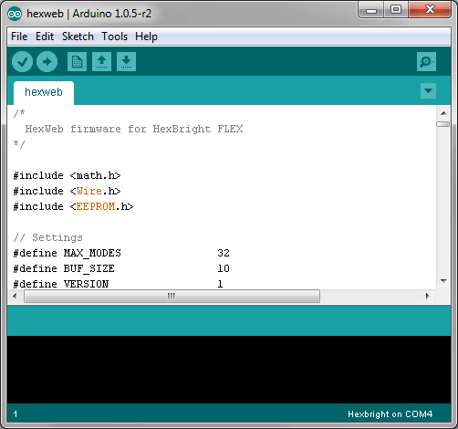
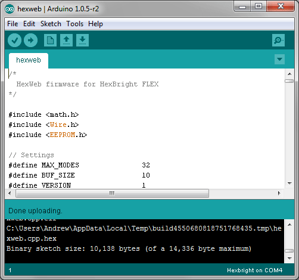
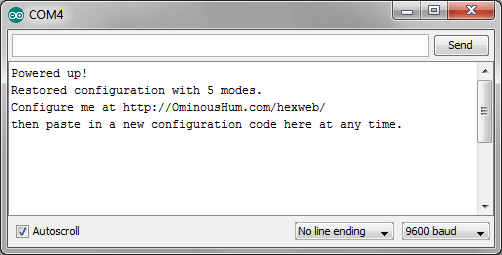

Hexweb
-
Firmware

Your Hexbright flashlight needs to be running a special program that works
with the codes generated on this site. Open
this program and upload it to your Hexbright. Refer to
Intro To Programming for help. As long as you don't upload a
different program, you only have to do this once.
-
Serial Monitor

With the Arduino software running, use it to open a serial monitor window
connected to your Hexbright. Refer to
Intro To Programming for help.
-
Codes

Now copy the configuration code from the web site, paste it into the
text box in the serial monitor window, and click 'Send'.
-
You're done!
And you never had to write any C code to reconfigure your Hexbright.